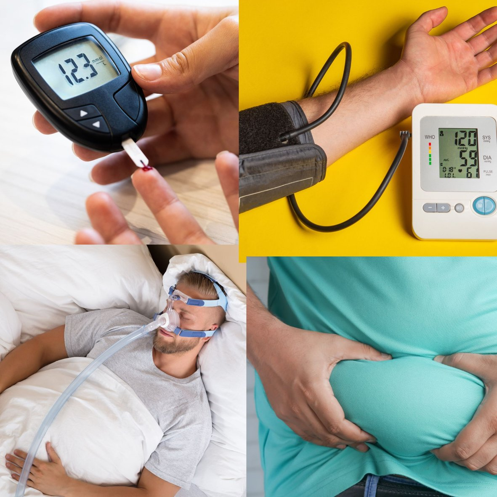

Apnée du sommeil : la cause cachée d'un poids qui ne baisse pas, d'une tension et d'une glycémie élevées
Vous faites tout pour perdre du poids, et pourtant la balance continue de monter ?
Vous prenez vos médicaments avec sérieux, et pourtant votre tension, votre glycémie ou votre cholestérol restent élevés ?
Ronflez-vous la nuit ? Vous réveillez-vous fatigué(e), quelle que soit la durée de votre sommeil ?
Si oui, le problème n'est peut-être pas votre discipline. Il pourrait s'agir d'une apnée du sommeil, une maladie fréquente mais souvent non diagnostiquée. Voici ce qu'il faut savoir.
Qu'est-ce que l'apnée du sommeil ?
L'apnée du sommeil est une maladie dans laquelle la respiration s'arrête et reprend à plusieurs reprises pendant le sommeil. La forme la plus courante est l'apnée obstructive du sommeil : les muscles situés au fond de la gorge se relâchent, les voies aériennes se rétrécissent ou se ferment, et l'air ne passe plus pendant 10 secondes ou plus. Le taux d'oxygène baisse, le cerveau détecte le danger et vous réveille brièvement pour relancer la respiration. Dans les formes sévères, cela peut se produire plus de 30 fois par heure.
La plupart des personnes ne gardent aucun souvenir de ces réveils et pensent avoir dormi toute la nuit. En réalité, leur sommeil a été haché, et leur organisme a subi un stress pendant des heures.
Les signes d'alerte
La nuit
- Ronflements sonores et réguliers
- Pauses respiratoires remarquées par votre conjoint(e) ou votre entourage
- Réveils en sursaut, avec sensation d'étouffement ou battements de cœur rapides
- Sommeil agité, transpiration abondante la nuit
- Besoin d'uriner plusieurs fois par nuit
- Bouche sèche ou mal de gorge au réveil
Le jour
- Réveil non réparateur, quelle que soit la durée du sommeil
- Maux de tête au réveil
- Somnolence excessive, y compris devant la télévision, en lisant ou au volant
- Difficultés de concentration et oublis
- Irritabilité ou baisse de moral
Tous ceux qui ronflent n'ont pas une apnée du sommeil, et certaines personnes atteintes ne ronflent pas bruyamment. Ce qui compte, c'est l'association des symptômes.
Pourquoi l'apnée du sommeil pèse sur le poids, la tension et la glycémie
L'apnée du sommeil est rarement la seule cause de ces problèmes, mais c'est une cause fréquente, curable, et souvent passée inaperçue. Les baisses répétées d'oxygène et le sommeil fragmenté agissent sur l'organisme de plusieurs façons :
- Tension artérielle : chaque épisode déclenche une décharge d'hormones de stress comme l'adrénaline. À la longue, la tension reste élevée, et l'apnée du sommeil est une cause bien connue d'hypertension difficile à contrôler malgré plusieurs médicaments.
- Glycémie : le manque de sommeil de qualité et la baisse d'oxygène rendent l'organisme plus résistant à l'insuline, ce qui fait monter la glycémie et complique le contrôle du diabète.
- Poids : le manque de sommeil réparateur perturbe les hormones qui régulent la faim et la satiété, ce qui augmente l'envie d'aliments sucrés et gras, tandis que la fatigue de la journée rend plus difficile le maintien d'une activité physique.
- Cholestérol : l'apnée du sommeil est aussi associée à un bilan lipidique défavorable.
- Un cercle vicieux : l'excès de poids, surtout autour du cou et de l'abdomen, rétrécit les voies aériennes et aggrave l'apnée, qui à son tour rend l'amaigrissement plus difficile.
Qui est le plus exposé ?
- Les personnes en surpoids ou avec un tour de taille élevé
- Un tour de cou supérieur à 40 cm
- Les hommes, et les femmes après la ménopause
- Les personnes de plus de 40 ans, même si elle peut survenir à tout âge
- Les personnes atteintes d'hypertension, de diabète de type 2 ou de maladie cardiaque
- Des antécédents familiaux d'apnée du sommeil ou de ronflements
- La consommation d'alcool ou de sédatifs le soir, le tabac, ou un nez bouché
Pourquoi il ne faut pas l'ignorer
L'apnée du sommeil non traitée est bien plus qu'une simple gêne. Elle est associée à l'infarctus, à l'AVC, aux troubles du rythme cardiaque (fibrillation auriculaire), à l'insuffisance cardiaque, à l'aggravation du diabète et à la dépression. La somnolence diurne augmente aussi le risque d'accidents de la route et de travail.
Comment le diagnostic est-il posé ?
La première étape est une consultation : votre médecin vous interroge sur vos symptômes et vos habitudes de sommeil, souvent à l'aide d'un court questionnaire, et évalue votre poids, votre tour de cou, votre tension, votre nez et votre gorge. Si une apnée du sommeil est suspectée, un enregistrement du sommeil confirme le diagnostic. Il mesure votre respiration, votre taux d'oxygène et votre fréquence cardiaque pendant la nuit, à domicile ou dans un laboratoire du sommeil, et permet d'évaluer la sévérité du problème.
Comment traite-t-on l'apnée du sommeil ?
La bonne nouvelle, c'est que l'apnée du sommeil se traite. Le traitement dépend de sa sévérité :
- La PPC (pression positive continue) : un masque porté la nuit qui envoie une légère pression d'air pour garder les voies aériennes ouvertes. C'est le traitement le plus efficace des apnées modérées à sévères.
- La perte de poids : même une perte de poids modeste peut réduire la sévérité de l'apnée, et l'améliore parfois nettement.
- L'hygiène de sommeil : dormir sur le côté plutôt que sur le dos, éviter l'alcool et les sédatifs avant le coucher, arrêter de fumer et traiter un nez bouché.
- Les orthèses ou la chirurgie : chez certains patients, une orthèse d'avancée mandibulaire sur mesure ou une intervention pour corriger un obstacle anatomique peuvent être proposées.
Quand l'apnée du sommeil est traitée, beaucoup de personnes retrouvent de l'énergie, une meilleure concentration et un meilleur contrôle de la tension et de la glycémie, et l'amaigrissement devient souvent plus facile.
L'essentiel à retenir
Si vous ronflez, si vous êtes constamment fatigué(e) et que votre poids, votre tension, votre glycémie ou votre cholestérol ne s'améliorent pas malgré vos efforts, ne vous culpabilisez pas. Parlez de l'apnée du sommeil à votre médecin.
N'essayez pas de poser le diagnostic vous-même, et n'arrêtez pas et ne modifiez pas vos médicaments de votre propre initiative. Seule une évaluation médicale complète, avec un enregistrement du sommeil si nécessaire, permet d'en avoir le cœur net.
Des ronflements, une fatigue constante et des chiffres qui ne baissent pas ? Contactez-nous directement.
Écrire sur WhatsAppCet article fournit des informations générales sur la santé et ne remplace pas une consultation médicale. En cas d'urgence médicale, appelez le SAMU (114) ou rendez-vous à l'hôpital le plus proche.